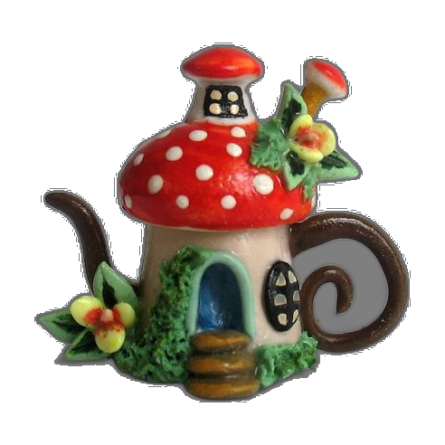
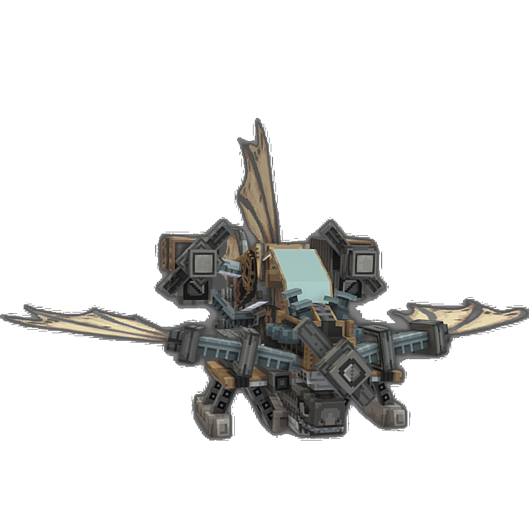
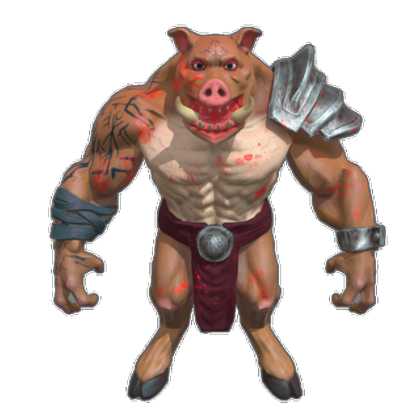
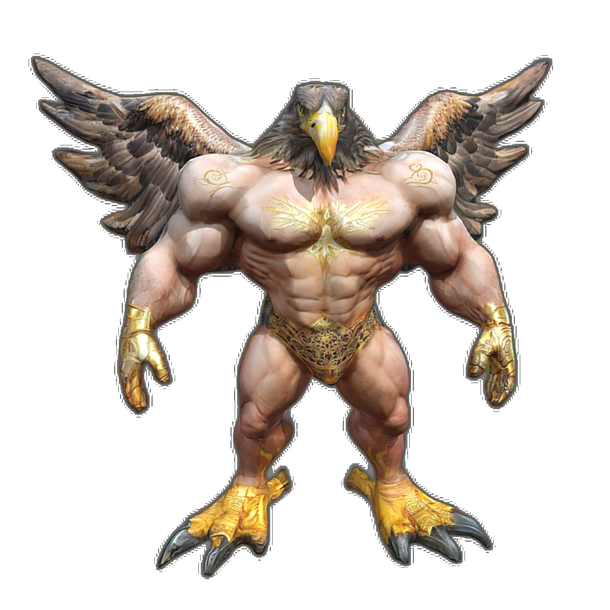
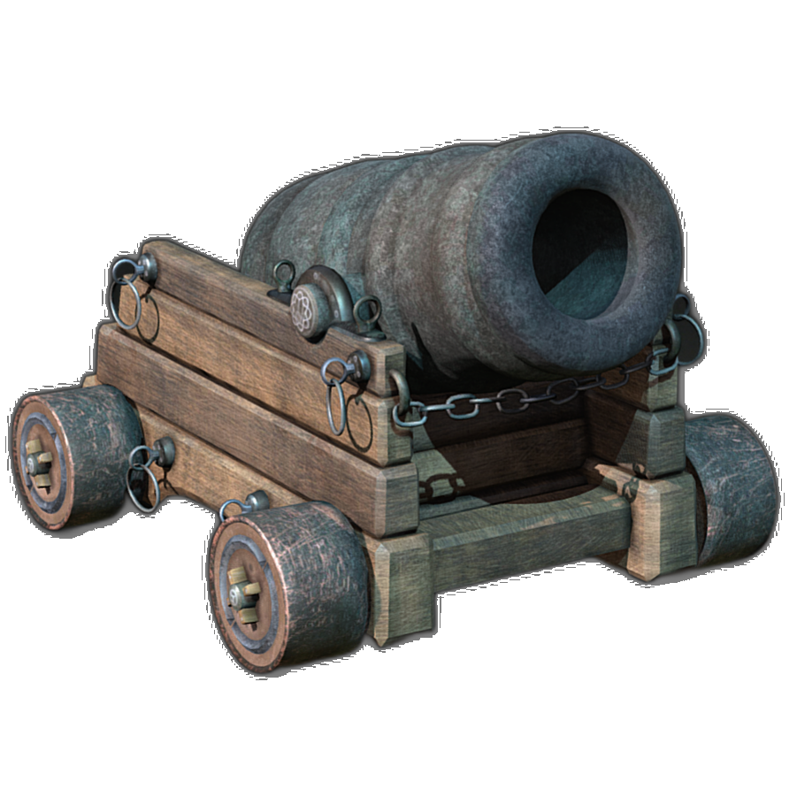
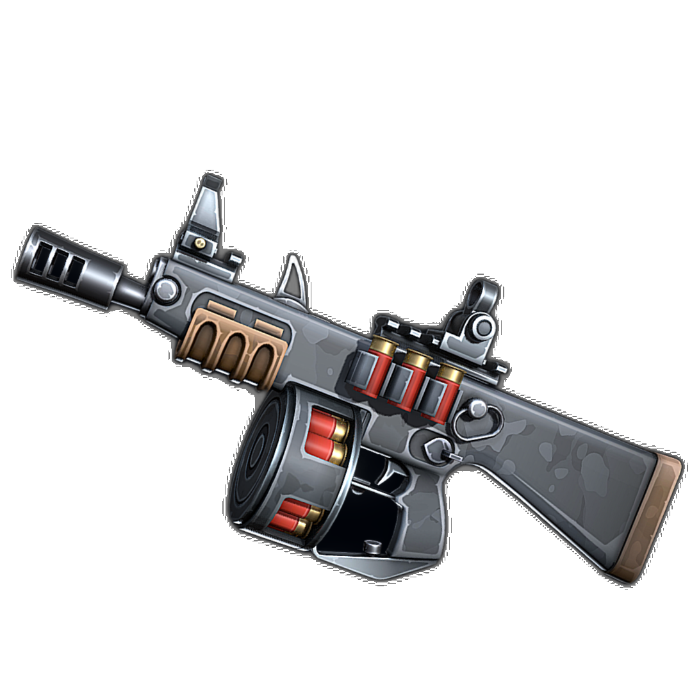

CraftsMan:
High-fidelity Mesh Generation with 3D Native Generation and Interactive Geometry Refiner
Weiyu Li*
1,2
,
Jiarui Liu*
1,2
,
Rui Chen
1
,
Yixun Liang
2,3
,
Xuelin Chen
4
,
Ping Tan
1,2
,
Xiaoxiao Long†
5
1
HKUST
,
2
LightIllusions
,
3
HKUST(GZ)
,
4
Tencent AI Lab
,
5
HKU
Arxiv
Paper
Supplementary
Code
Video
Result Gallery for Image Conditioned 3D Native Diffusion(1 - 8 / 16)
Reference Image

Output Coarse Mesh
Reference Image

Output Coarse Mesh




Home Page
Next Page >